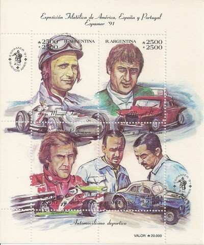
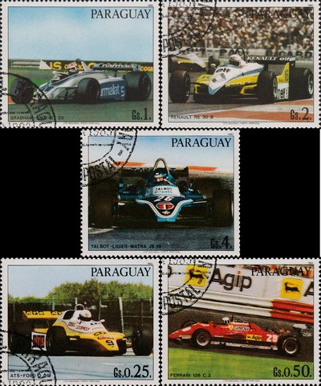

|
Argentina |
|

Issue date: 1991
A commemorative sheet featuring various Argentinian cars and drivers, including the following from F1:
- Carlos Reutemann
- Juan Manuel Fangio
- Mercedes-Benz W196
|
|
Issue date: 2001
A mini sheet of four values featuring some early F1 cars:
Alfa Romeo 159 (1951)
Mercedes Benz W196 (1954 - 1955)
Ferrari D50 (1955 - 1957)
Maserati 250F (1954 - 1960)
|
|

Issue date: 24th October 2009
A mini sheet of two values showing Jose Froilan Gonzalez driving the Ferrari 375 at Silverstone in 1951 - Gonzalez won the race, but came third in the drivers championship that year behind Fangio and Ascari.
The sheet also depicts the 2009 Ferrari F60 - the F60 was driven to fourth place in the constructors championship by Felipe Massa and Kimi Raikkonen
|
|

Issue date: 1995
A series of postal stationery cards featuring Juan Manuel Fangio.
Fangio competed in F1 from 1950 to 1958 - he won the drivers' championship five times, with four different teams (Alfa Romeo, Mercedes-Benz, Ferrari and Maserati) - a feat that has never been repeated. Regarded by many as the greatest driver of all time, Fangio was held in high regard by the drivers. In his final race, Mike Hawthorn had lapped Fangio, but just before Hawthorn crossed the line, he braked to allow Fangio through so that he could complete the full race distance.
|
|

Issue date: 1995
A series of postal stationery cards featuring Juan Manuel Fangio.
Fangio competed in F1 from 1950 to 1958 - he won the drivers' championship five times, with four different teams (Alfa Romeo, Mercedes-Benz, Ferrari and Maserati) - a feat that has never been repeated. Regarded by many as the greatest driver of all time, Fangio was held in high regard by the drivers. In his final race, Mike Hawthorn had lapped Fangio, but just before Hawthorn crossed the line, he braked to allow Fangio through so that he could complete the full race distance.
|
|
Issue date: 1995
A series of postal stationery cards featuring Juan Manuel Fangio.
Fangio competed in F1 from 1950 to 1958 - he won the drivers' championship five times, with four different teams (Alfa Romeo, Mercedes-Benz, Ferrari and Maserati) - a feat that has never been repeated. Regarded by many as the greatest driver of all time, Fangio was held in high regard by the drivers. In his final race, Mike Hawthorn had lapped Fangio, but just before Hawthorn crossed the line, he braked to allow Fangio through so that he could complete the full race distance.
|
|

Issue date: 2008
Juan Manuel Fangio raced in F1 from 1950 to 1958. He won the drivers championship in 1951 (Alfa Romeo), 1954 (Maserati/Daimler Benz), 1955 (Daimler Benz), 1956 (Ferrari) and 1957 (Maserati). His record of five titles stood for 46 years until it was beaten by Michael Schumacher. Many consider Fangio to be the greatest driver of all time - he has the highest winning percentage (46%) compared to Michael Schumacher's (33%). He is also the only Agentine driver to have won the Argentine Grand Prix.
Fangio, unlike later Formula One drivers, started his racing career at a mature age and was the oldest driver in many of his races. During his career, drivers raced almost with no protective equipment. Fangio had no compunction about leaving a team, even after a successful year or even during a season, if he thought he would have a better chance with a better car. As was then common, several of his race results were shared with team mates after he took over their car during races when his own had technical problems. His rivals included Alberto Ascari, Giuseppe Farina and Stirling Moss.
|
 |
Brazil |
|
Issue date: 29th July 1983
A mini sheet commemorating Brazilian driver success in the F1 world drivers' championship:
- 1972 - Emerson Fittipaldi, Lotus 72D
- 1974 - Emerson Fittipaldi, McLaren M23
- 1981 - Nelson Piquet, Brabham BT49C/BT50
|
|

Issue date: 23rd March 1989
A special stamp issue commemorating Ayrton Senna's 1988 drivers' title.
1988 was Senna's first season with McLaren; it was Senna's first drivers' title (just beating team mate Alain Prost). McLaren comfortably won the constructors' title too.
|
|

Issue date: 1972
A special stamp issue commemorating Emerson Fittipaldi's 1972 drivers' title.
Lotus took both championships by surprise in 1972 with 25-year old Brazilian driver Emerson Fittipaldi who became the youngest world champion at that point.
|
|
Issue date: 1994
Ayrton Senna commemoration.
On 1st May 1994, Ayrton Senna's Williams FW16 left the track at the Tamburello corner on the seventh lap of the San Marino Grand Prix at Imola and collided with an unprotected concrete barrier. The crash itself was seemingly innocuous because, despite the telemetry later revealing that he was travelling at 193mph when he left the track, the collision itself appeared to be glancing and nobody was prepared for outcome that followed.
Tens of thousands of Italian Formula 1 fans looked on, open mouthed and disbelieving as Professor Sid Watkins performed an emergency tracheotomy on the driver whom he later confessed was already beyond saving. Professor Watkins was later quoted as saying "He looked serene. I raised his eyelids and it was clear from his pupils that he had a massive brain injury. We lifted him from the cockpit and laid him on the ground. As we did, he sighed and, although I am totally agnostic, I felt his soul depart at that moment."
Despite numerous conspiracy theories about what actually happened that day, it is generally accepted that the impact of the collision had caused one of the suspension beams to come adrift, piercing Senna's helmet and causing inter-cranial trauma just above his right eye. The incident followed a period of six laps where the drivers had been under the control of the safety-car and it was clear from the on-board camera on Michael Schumacher's Benetton that Senna's car was suffering from a notable loss of traction as the race restarted.
|
|
Issue date: 2000
Ayrton Senna da Silva, Sao Paulo, March 21, 1960, Bologna Italy May 1, 1994) was a Brazilian racing driver and three-time Formula One world champion. He was killed in a crash while leading the 1994 San Marino Grand Prix, and remains the most recent Grand Prix driver to die at the wheel of a Formula One car.
Senna is regarded as one of the greatest drivers in the history of Formula One.
|
|

Issue date: 2000
Francisco Sacco Landi, better known as Chico Landi (July 14, 1907 - June 7, 1989) was a racing driver from Sao Paulo, Brazil. He participated in 6 Formula One World Championship Grands Prix, debuting on September 16, 1951. He scored a total of 1.5 championship points, awarded for his 4th place finish in the 1956 Argentine Grand Prix (driving a Maserati), a drive he shared with Gerino Gerini. Landi was the first Brazilian driver to drive a Ferrari in a Formula One race, albeit not for the works team, and he drove one to victory at the Bari Grand Prix in 1948.
|
|

Issue date: 1988
Nelson Piquet competed in F1 from 1978 to 1991, he won the drivers championship three times in all, in 1981 and 1983 driving a Brabham (BT49C and BT52) for the Parmalat Racing Team and in 1987 driving the Williams FW11B.
Piquet moved to Williams in 1986 which saw him becoming the team-mate of one of his fiercest rivals, Nigel Mansell. Both were regarded as highly strung characters with delicate temperaments. Two top drivers in the same team was a recipe for fireworks - and sure enough Mansell and Piquet went head to head for the title. Though the two drove the best cars on the grid, their rivalry caused each to deprive the other of points, allowing Alain Prost to win one of the closest and most fiercely disputed championships ever in F1.
|
 |
Co-operative Republic of Guyana |
|

Issue date: 2009
A mini sheet of four values showing various Ferrari F1 cars.
1952 500 F2 - an F2 specification car powered by an in line four cylinder engine which was mounted behind the front axle, improving weight distribution. Alberto Ascari won 9 straight races in the 500, a world championship record which still stands today. The 500 won all but one race it was entered in, making it the second most statistically successful car in the history of the FIA world championship, after McLaren MP4/4 which failed to win only one of its 16 races.
1953 500 F2
1958 246 F1 - the 246 used a 2417cc Dino V6 engine with a 65degree angle between the cylinder banks. This was the first use of a V6 engine in an F1 car, but otherwise the 246 was a conventional front engine design. The Ferrari 246 was good enough to win a World Championship for Mike Hawthorn and a second place in the Constructors Championship for Ferrari.
1976 312 T2
|
|

Issue date: 1998
A mini sheet of one stamp showing Stirling Moss and the Maserati 250F - Moss drove the Maserati 250F in 1954, 1956 and 1957 (winning the Monaco and Italian Grand Prix in 1956).
In total, the 250F competed in 46 F1 championship races with 277 entries, leading to eight wins. Success was not limited to World Championship events with 250F drivers winning many non-championship races around the world.
|
|

Issue date: 1998
A mini sheet of six values , featuring:
- Stirling Moss in the Mercedes-Benz W196
- Phil Hill in the Ferrari 246 F1
- Jack Brabham in the Brabham BT19
- John Miles in the Lotus 72
- Alain Prost in the Renault RE40
- David Coulthard in the McLaren MP4/13
|
|

Issue date: 1999
A set of 6 values showing the following Ferrari F1 cars:
1976 312 T2 - this car helped Ferrari win its second consecutive constructor's title, Niki Lauda conceded the driver's title to James Hunt as it was in this car that he suffered a massive accident and was nearly burnt to death, but was back racing just six weeks later.
1954 553 F1
1954 D50 - the Lancia D50 made its debut toward the end of the 1954 season, in the hands of Alberto Ascari, but following his death, the Lancia family sold their controllong share of the company to Ferrari, who continued to develop the car - Juan Manuel Fangio won the championship in the Ferrari D50.
1958 246 F1 - the 246 used a 2417 cc Dino V6 engine, this was the first use of a V6 engine in an F1 car, this car was also the last front engined car to win a Grand Prix (1960 Monza).
1982 126 C2 - the 126 C2 featured Ferrari's first genuine full monocoque chassis and provided Ferrari with the constructor's title.
1972 312 B2
|
 |
Paraguay |
|

Issue date: 1989
A mini sheet of stamps and labels featuring the following cars and drivers:
- Jim Clark - 19060 to 1968, Lotus
- Carlos Reutemann - 1972 to 1982, Brabham, Ferrari, Lotus and Williams
- Jochen Rindt - 1964 to 1970, Brabham, Cooper and Lotus
- Alain Prost - 1980 to 1993, McLaren, Renault, Ferrari and Williams
- Juan Manuel Fangio - 1950 to 1958, Alfa Romeo, Maserati, Daimler Benz and Ferrari
- Brabham BT34
- Lotus 49
- Maserati 250F
|
|
Issue date: 1989
A set of 5 stamps showing various F1 drivers and their cars.
- Stirling Moss and Mercedes, Moss drove the Mercedes W196 in 1955.
- Emerson Fittipaldi and Lotus, Fittipaldi drove for Lotus from 1970 to 1973, winning the F1 World Championship in 1972.
- Nelosn Piquet and Lotus, Piquet drove for Lotus in 1988 and 1989.
- Niki Lauda and Ferrari, Lauda drove for Ferrari from 1974 to 1977, winning the F1 World Championship in 1975 and 1977.
- Juan Manuel Fangio and Maserati, Fangio drove for Maserati in 1953, 1954, 1957 and 1958, winning the F1 World Championship in 1954 and 1957.
|
|

Issue date: 1982
A set of 7 stamps, showing 5 F1 cars from the 1982 season:
Brabham BMW BT50 - this car was only used for part of 1982 season by Nelson Piquet and Ricardo Patrese.
Renault RE30 B - driven by Alain Prost and Rene Arnoux - it was a formidable qualifying car, but failed to deliver the race results.
Talbot-Ligier-Matra JS 19 - driven by Eddie Cheever and Jacques Laffite, it was an unreliable car.
ATS Ford D 05- driven by Manfred Winkelhock and Eliseo Salazar, it was an unreliable car.
Ferrari 126 C2 - driven by Gilles Villneuve, Patrick Tambay, Didier Pironi and Mario Andretti, this car gave Ferrari the constructors championship.
|
|

Issue date: 1982
A set of seven stamps showing various F1 cars:
Tyrell
Lotus
McLaren
Brabham
Renault
Wolf
In 1976 businessman Walter Wolf bought 60% of Frank Williams Racing Cars while agreeing to keep Frank Williams as manager of the team. Simultaneously he bought the assets of the Hesketh team that had recently withdrawn from F1. The team was based in the Williams facility at Reading but used most of the cars and equipment once owned by Hesketh Racing. The Hesketh 308C became known as the Wolf-Williams FW05 and soon afterwards Harvey Postlethwaite arrived as chief engineer.
Jacky Ickx and Frenchman Michel Leclere were hired to drive. The team, however, was not very competitive and failed to qualify at a number of races during the year. Leclere left after the French Grand Prix and was replaced by Arturo Merzario, while Ickx failed to perform and was dropped after the British Grand Prix, to be followed by a string of pay-drivers.
At the end of 1976, Wolf decided that the team needed restructuring. He removed Frank Williams from the manager's job and replaced him with Peter Warr from Team Lotus. Disillusioned, Williams soon left the team, taking Patrick Head and several others to set up Williams Grand Prix Engineering. Postlethwaite's WR1 was a conventional Cosworth package but with Jody Scheckter hired from Tyrrell, the new-look team presented a strong package. No-one, however, expected that the team would win its first race in Argentina.
It was in many respects a lucky win with Scheckter starting tenth with six of the cars ahead of him retiring. During the 1977 season, Scheckter went on to win the Monaco Grand Prix and the Canadian Grand Prix and also six other podium finishes which enabled him to finish second to Niki Lauda in the World Championship and gave Wolf fourth place in the Constructors' Championship.
The team remained the same for the 1978 season. Postlethwaite produced the WR5, a new car for the ground-effects era. This did not appear until the Belgian GP. Scheckter finished fourth in Spain and second in Germany but the WR5 soon made way for the WR6 with which he ended the year with a third in the US Grand Prix and second in Canada. He finished seventh in the World Championship.
In 1979, Scheckter was signed up by Ferrari and Wolf signed James Hunt to replace him. Postlethwaite designed the WR7 which ran with Olympus sponsorship. The car was not very successful and retired more than 7 times during the first half of the season. The WR8 soon followed. In mid-season Hunt decided to retire and Wolf quickly hired Keke Rosberg to replace him. The appearance of the WR9 did little to change the team's fortunes and at the end of the year Wolf grew tired of his F1 adventure and sold the team to Emerson Fittipaldi, who merged its assets into Fittipaldi Automotive.
|